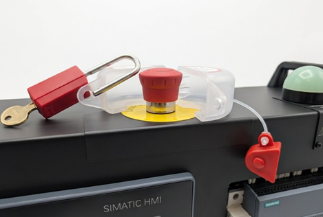

Lockout Tagout (LOTO) is a safety procedure used to ensure equipment is properly isolated before maintenance or inspection. Energy sources are disconnected and secured with locks and tags to prevent unexpected start-up. This worksheet helps you understand how proper isolation protects people and equipment when working on PLC controlled systems.

Follow these steps:
Press the Emergency Stop down.
Place the LOTO cover for the estop around the estop by opening it. It opens by removing the red security seal off the clear case and then opening the case.
Wrap the clear cover around the estop and attach the red security seal back on.
a. Open the padlock and place the padlock through the security seal to lock the cover in place.
b. Lock the padlock and remove the key.
On the HMI, navigate to worksheet 12 again and try triggering the relay by spinning the potentiometer on AI0.
a. The PLC is receiving your command to start the relay via the potentiometer however it is ignoring it due to the estop being pressed.
b. There is no way to reset the estop now once the LOTO padlock is installed.
In real industrial environments, pressing an emergency stop is not enough to make equipment safe for maintenance. Someone else could reset the emergency stop or the system could be restarted remotely, creating a serious hazard.
By fitting a LOTO cover and padlock, you physically prevent the emergency stop from being reset. This guarantees that even if a PLC command is issued (for example from the HMI or a potentiometer), the system will remain in a safe state.
Maintenance engineers must always verify isolation and apply their own lock before working on machinery. This worksheet demonstrates how LOTO provides a clear, physical barrier that protects personnel and prevents unexpected machine operation.